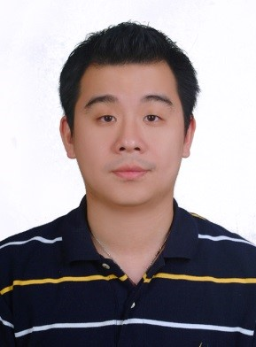

高嵩明
台強文化有限公司執行長─高嵩明，於2006年5月4日在捷克共和國首都布拉格接受捷克政府的頒獎表揚，成為史上第一位榮獲捷克共和國「國家之友獎」殊榮的台灣人。這是捷克共和國為了感謝對捷克共和國有特殊貢獻者所頒贈的獎項，本次同時獲獎者還有美國前國務卿歐布萊特、高棉(柬埔寨)國王、教廷樞機主教等多位國際名人。 高老師從中原大學資訊管理第一屆畢業，先後擔任過書店店長、量販店經理以及高科技光通訊公司的業務經理。多年來工作雖然十分忙碌，但是他卻也一直默默地獨自推動文化與旅遊方面的國民外交，對於歐洲、美洲和日本文化都具有濃厚興趣的他，結合了興趣和理想，辭掉人人稱羡的科技新貴職務，於2004年返鄉創業，經營著這家全國最獨特的藝文咖啡館─活力文化咖啡館。 藉由活力咖啡館內所陳列販售的專業文化書籍和各種經典版本的古典音樂CD和DVD，持續地引介歐、美、日等地區的文化給國人欣賞與體驗。而且他也積極投入文化產業，更以此為媒介，主動從事國民外交。例如由他所執筆撰述的《1990年布拉格之春音樂節開幕演奏會》DVD，不但在國內造成廣大的迴響，而且還親自呈送給捷克共和國前總統─哈維爾先生，令哈維爾先生讚賞不已。更令人振奮的是─捷克愛樂管弦樂團也已經正式將高老師所執筆撰述的《1990年布拉格之春音樂節開幕演奏會》DVD，列入該團的團史館中永久珍藏。2009年2月7日他的第一本著作《捷克經典》一書受邀於台北國際書展新書發表簽名會，廣泛引起國內學術界與旅遊業的激賞，並且再次榮獲捷克共和國頒發「卓越貢獻勳章」，也讓《捷克經典》一書為台捷邦交友誼作出最佳見證!!!
高老師也經常應邀在國內各級學術單位、機關、企業、社區團體作「歐洲、日本深度文化之旅」以及「古典音樂欣賞」的演講，而且也經常擔任隨團講師帶領國人到歐洲和日本地區進行深度文化之旅。近來更受台中市政府之託，擔任台中市的跨域城區導覽講師。 高老師認為得到捷克的「國家之友獎」以及「卓越貢獻勳章」，除了是獲得國際友人的高度肯定之外，更重要的是持續地推動文化上實質的國民外交。這也是他多年來所一直秉持的信念，一路走來雖然倍嚐艱辛，但是卻讓全世界在肯定台灣的高科技產業之外，也能發自內心地尊敬與欣賞台灣文化的「真、善、美」。

金志聿
商業周刊封面人物、天下、遠見、SMART智富、Cheers快樂工作人、中原大學校刊、蘋果日報、聯合報等數十份雜誌刊物專訪個人故事 中視新聞、華視點燈、東森創業人物專題、沈春華Live Show等百餘家電視媒體專訪個人創業故事 個人創業成績獲頒母校桃園縣振聲高級中學傑出校友榮耀。(2011年)
- 榮獲國家發展基金創業天使計劃補助首獎(2016年)
- 榮獲經濟部中小企業處 中小企業創新研究獎(2007年)
- 榮獲經濟部工業局 數位內容產品獎(2008年)
- 榮獲經濟部技術處SBIR研發計劃補助(2007年、2013年-2016年)
- 榮獲經濟部商業司 ASSTD研發計劃補助(2010年)
- 領導公司研究發展，榮獲三項專利、三項商標申請認證
- 榮獲經濟部商業司 E21金網獎第一名(2007年)
- 受邀總統府、中央部會、縣市政府、大專院校、媒體等單位專題演講超過百場
劉正偉
2006年創立淇晨科技有限公司，致力於設計符合中小企業使用的各種線上服務系統，並於AmazonAWS雲端之下，發展新型態的軟體租用服務模式（SaaS），並於 2012年 推出 wed917享婚婚禮服務平台、 365Booking 旅館線上訂房服務、2014年 推出365Shop線上購物服務等，服務涵蓋多種產業與應用。
- TDK東電化台灣官網
- 圓山花博MAJI集食行樂官網
- 全廉工坊系統傢俱線上購物
- 馬玉山紅頂榖創線上購物
- Jansport台灣官方購物網
- 脫普聚益妙潔購物網
- Coleman台灣官網
- Aigle台灣官網